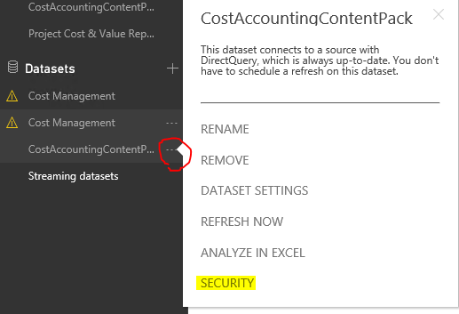
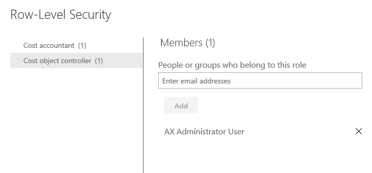

Sicherheit für den Power BI-Inhalt der Kostenrechnungsanalyse einrichten
[!include[banner](../includes/banner.md)]In diesem Thema wird erläutert, wie Sie Zugriffebenensicherheit in der Kostenrechnung auf Positionsebene in Microsoft Power BI umsetzen können. Diese Funktion stellt sicher, dass Benutzer nur Power BI-Daten sehen, für die Ihnen Zugriff erteilt werden.
Übersicht
Der Kostenrechnungsanalyse Microsoft Power BI-Inhalt verwendet die Power BI Sicherheit auf Positionsebene, um die Zugriffsrechte eines Benutzers zu beschränken. Sicherheit basiert auf der Zugriffebenenorganisationshierarchie, die in den Kostenrechnungsparametern eingerichtet wird. Weitere Informationen zum Kostenrechnungsanalyse Power BI-Inhalt finden Sie in Kostenrechnungsanalyse für Power BI-Inhalt.
Einstellungen
Um die Zugriffebenensicherheit für Power BI zu nutzen, muss der Eigentümer der Power BI-Inhalte die folgenden Schritte ausführen.
Note
Der Benutzer, der den Kostenrechnungsanalyse Power BI-Inhalt veröffentlicht, wird automatisch der Eigentümer. Nur ein Eigentümer kann die Sicherheit in Power BI einrichten. Darüber hinaus bis ein Eigentümer andere Benutzer auf PowerBI.com hinzufügt, außer dem Besitzer kann niemand Daten in Kostenrechnungsanalyse Power BI-Inhalten anzeigen.
Veröffentlicht der Definitionsdatei in Power BI.
Melden Sie sich bei PowerBI.com an.
Suchen Sie das Dataset für den Kostenrechnungsanalyse Power BI-Inhalt
Öffnet Sie die Sicherheitsseite.

Die Kostenträgercontroller Rolle ist bereits erstellt. Fügen Sie andere Mitglieder hinzufügen, die Teil der Kostenrechnungs-Zugriffebenenorganisationshierarchie sind.

Benutzer, die zur Rolle Kostenträgercontroller hinzugefügt werden, finden nur die Daten, um die ihnen zulässig sind, um festzustellen, entsprechend der Definition im Formular Kostenrechnungs-Zugriffebenenorganisationshierarchie.
Note
Sicherheit auf Positionsebene gilt für Kacheln zu und Berichte, die von Power BI eingebettet werden.
Sicherheit aktualisieren
Wenn Aktualisierungen der Zugriffebenensicherheit in der Kostenrechnung erstellt werden und Sie Power BI diese Aktualisierungen anzeigen lassen möchten, müssen Sie den Entitätsspeicher für den Kostenrechnungsanalyse Power BI-Inhalte aktualisieren. Nachdem Sie die Entitätsspeicheraktualisierung ausgeführt haben, müssen Sie die Artefakte auf PowerBI.com aktualisieren. Weitere Informationen zum Aktualisieren eines Entity Store finden Sie unter Power BI-Integration mit Entity Store (This is an external link). Der Eigentümer des Kostenrechnungsanalyse Power BI-Inhalts muss eine Entitätsspeicheraktualisierung auch erforderlich, wenn neue Benutzer Zugriff der Organisationshierarchie gewährt werden. Zudem muss der Eigentümer die neuen Benutzer der Kostenträgercontroller für PowerBI.com hinzufügen, um Sicherheit auf Positionsebene für sie angewendet wird.
Deaktivieren von Sicherheit
Es wird davon ausgegangen, dass Ihre Organisation möchte den Datenzugriff einschränken. Wenn aus einem bestimmten Grund Sicherheitsparameter deaktiviert werden, die bei der Kostenrechnung ausführen, Eigentümer muss der Benutzer der Kostenbuchhalter Rolle in Power BI stattdessen hinzufügen. Wenn Sie die Sicherheit von einem aktivierten Status zu einem deaktivierten Zustand ändern, wird empfohlen, Benutzer von der Kostenträgercontroller Rolle zu entfernen. Und umgekehrt, falls Sie die Sicherheit erneut aktivieren. Benutzer können Rollen beiden gehören. Gemeinsamer Zugriff ist beider Rollen gemeinsam. Im Fall eines Kostenrechnungsanalyse Power BI-Inhalts, Benutzer, die gemeinsamen Zugriff erhalten, haben Zugriff die uneingeschränkte Daten. Wenn Sie möchten, das der Zugriff eingeschränkt ist, müssen Benutzer nur der Kostenträgercontroller Rolle zugewiesen werden. Diese Sicherheitsupdates auf Positionsebene sind sofort wirksam. Betroffene Benutzer können ihre Browser aktualisieren.
Zusätzliche Ressourcen
Weitere Informationen über die Sicherheit auf Positionsebene in Power BI finden Sie unter Sicherheit für Ihr Modell in Power BI verwalten.